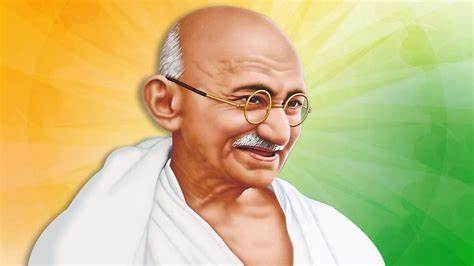

First they ignore you, then they laugh at you, then they fight you, then you win. (Mahatma Gandhi)
2, 1869: ·Birth of Mohandas Karamchand Gandhi
September 4, 1888: ·Gandhi leaves for England to study law.
October 1899: ·Outbreak of Boer War (1899-1901) in South Africa.
Gandhi organizes an ambulance corps for the British.
Gandhi returns to India to attend the Indian National Congress.
G.K. Gokhale introduces him to nationalist leaders.
July 31, 1907: The Boer Republic Transvaal, now under the control of the British, attempts to register all Indians as members; Gandhi and others refuse to register.
Their resistance efforts mark the first use of nonviolent non-cooperation by the Indian minority in South Africa, soon calledsatyagraha, or "soul-force."
January 11, 1908: ·Gandhi is arrested and sentenced to two months in prison.
August 15, 1947: ·Indian independence becomes official, as does the partition into two countries, India and Pakistan.
August-December 1948: ·India dissolves into chaos and killings, as Hindus and Muslims flee for the borders of India and Pakistan.
January 30, 1948: ·Gandhi is assassinated by Nathuram Vinayuk Godse, a Hindu nationalist.